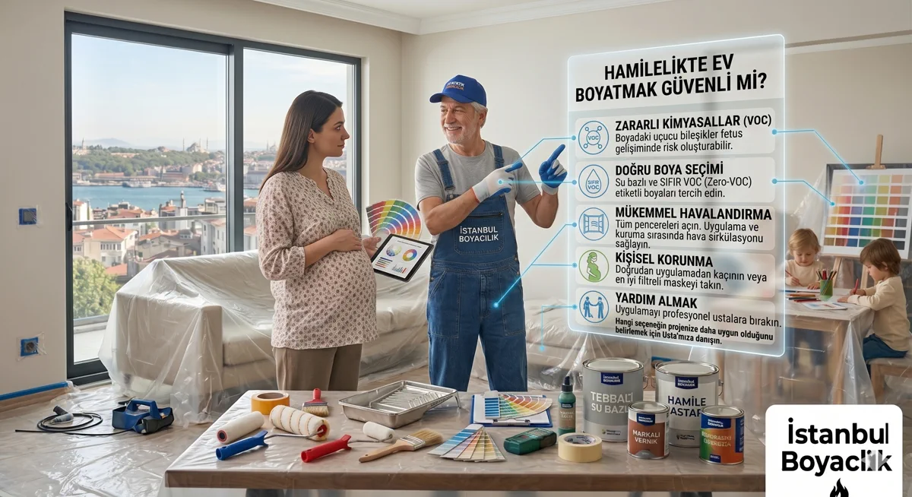

Hamilelikte Ev Boyatmak Güvenli mi?
Güncelleme: 5 Ekim 2026

Hamilelikte boya uygulaması için herkese geçerli bir güvenlik garantisi verilemez. Kullanılan ürün, uygulama biçimi, havalandırma ve kişisel sağlık durumu birlikte değerlendirilir. Maruziyeti azaltmak için boyama ve yüzey hazırlığı sırasında başka bir yerde bulunmak en ihtiyatlı planlamadır.
VOC ve boya kokusu nasıl değerlendirilir?
VOC, uçucu organik bileşikler için kullanılan bir terimdir. Boya ve çözücü içeriği üründen ürüne değişir. Koku şiddeti maruziyetin güvenilir ölçümü değildir; kokunun kaybolması da tüm emisyonların bittiğini göstermez. CDC/NIOSH, gebelikte belirli çözücülere maruziyetin mümkün olduğunca azaltılmasını önerir. Bu bilgi eviniz için ölçülmüş bir risk düzeyi veya güvenli geri dönüş saati vermez.
Düşük VOC ve Zero VOC ne anlama gelir?
| Ürün veya uygulama | Kontrol edilecek bilgi |
|---|---|
| Su bazlı, düşük VOC boya | Teknik föyde VOC beyanı, güvenlik bilgi formu ve havalandırma talimatları; su bazlı olması tek başına güvenlik garantisi değildir. |
| Zero VOC etiketli boya | Beyanın kapsamı ve renklendirilmiş ürün için geçerliliği. Bu etiket tüm kimyasal maddelerin veya tüm risklerin sıfır olduğu anlamına gelmez. |
| Solvent bazlı ürün veya sprey | Çözücü ve aerosol maruziyeti; gebelikte bu işlerden uzak durmak ve alternatif uygulamayı sağlık profesyoneliyle değerlendirmek gerekir. |
Boyama öncesinde ve sırasında planlama
- Boyanın tam ürün adını, teknik föyünü ve güvenlik bilgi formunu isteyin; astar ve temizleyicileri de listeye ekleyin.
- Boyama, raspa ve zımpara sırasında uygulama alanında bulunmayın; mümkünse iş tamamlanana kadar başka bir yerde kalın.
- Dışarıya hava akışı sağlayın. Kuruma, katlar arası bekleme ve havalandırma için seçilen ürünün talimatlarına uyun.
- Eve dönüş için yalnız kokuya veya sabit bir saat sayısına dayanmayın. Ürün bilgilerini ve kişisel durumunuzu sağlık profesyoneliyle değerlendirin.
N95/FFP2 maske boya buharına karşı korur mu?
N95 ve FFP2 parçacık filtreli maskelerdir; boya kaynaklı gaz ve buharlara karşı koruma sağlamazlar. CDC/NIOSH da parçacık filtreli maskelerin gaz ve buharları filtrelemediğini açıklar. Maske takmak boyama alanında kalmayı güvenli hale getirmez. Gaz/buhar için solunum koruyucu seçimi profesyonel risk değerlendirmesi, uygun filtre/kartuş ve yüz uyumu gerektirir; burada kişiye maske veya kartuş reçetesi verilmez.
Eski boya ve yüzey hazırlığı
Eski boya katmanlarının raspa veya zımparası toz oluşturur. Binanın yılına bakarak Türkiye'deki bir yüzeyin kurşun içerip içermediği kesinleştirilemez. Şüpheli eski katmanlar değerlendirilmeden kuru zımpara yaptırmayın; gebelikte tadilat tozundan uzak durun. CDC'nin gebelikte kurşun bilgilendirmesi eski boya ve tadilat tozunu olası maruziyet kaynakları arasında sayar.
Kaynaklar ve ürün bilgisi
- CDC/NIOSH: Çözücüler ve üreme sağlığı
- CDC/NIOSH: Parçacık maskeleri, gaz ve buhar sınırı
- CDC: Gebelik ve kurşun maruziyeti
İlgili Yazılar:
VOC nedir? Sağlığa zararsız boya seçimi | Bebek odası için güvenli boyalar
Sık Sorulan Sorular
Ürün ve Uygulama Planı İçin Keşif
Kullanılacak ürünün tam adı, yüzey hazırlığı ve havalandırma planı için ücretsiz keşif talep edin. Sağlık kararınızı takip eden sağlık profesyoneliyle alın.